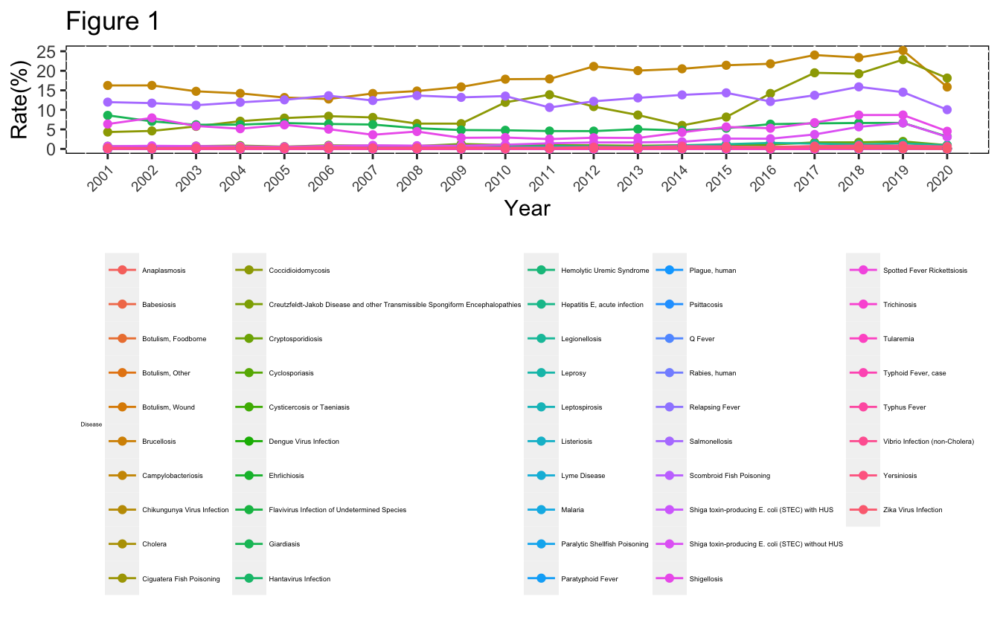
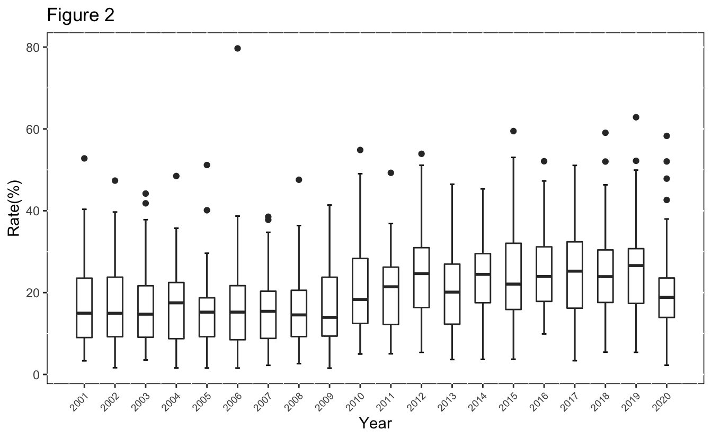
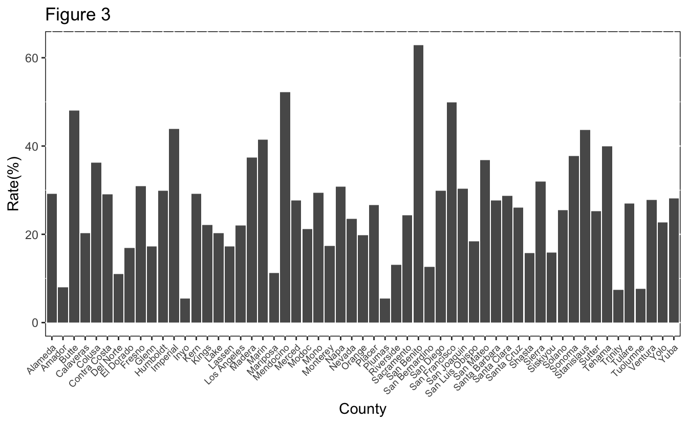

The dataset, called Infectious Diseases by Disease, County, Year, and Sex, is downloaded from California Health and Human Services Open Data Portal.
This dataset contains case counts and rates by disease, county, year, and sex for selected infectious diseases that met the surveillance case definition in California. There are 9 columns in the dataset: Disease, County, Year, Sex, Cases, Population, Rate, Lower_95__CI, and Upper_95__CI. There are 167,974 rows. The data represent cases with an estimated illness onset date from 2001 through the last year indicated from California Confidential Morbidity Reports and/or Laboratory Reports. Data captured represent reportable case counts as of the date indicated in the “Temporal Coverage” section below, so the data presented may differ from previous publications due to delays inherent to case reporting, laboratory reporting, and epidemiologic investigation.
After looking at the whole dataset, we formed two questions: We would like to know the infectious diseases with the highest prevalence, and in which year the diseases had a highest infection rate. In that year, did the diseases spread evenly across the whole state? Is there a significant difference in infection rates between males and females?
Data was downloaded from “https://data.chhs.ca.gov/dataset/infectious-disease”.
Geographical data was downloaded from “https://public.opendatasoft.com/explore/dataset/us-county-boundaries/export/?disjunctive.statefp&disjunctive.countyfp&disjunctive.name&disjunctive.namelsad&disjunctive.stusab&disjunctive.state_name&refine.stusab=CA”.
Merge diseasaes and CA_geo.
The dataset has 6 columns. Among them, columns “Cases” and “Rate” have several missing values because of “Scoring Criteria” prevent them from being publicated. Thus, we can remove them.
Remove NA rows.
The data type of column “Rate” is chr, which we do not want it to be. Thus, we change the data type to num.
The “County” column includes rows called “California”, which is the state not a county, so we delete them. We saved the aggregate “California” data into a new variable “Cal”.
| Year | Sex | Count of Diseases | Cases Avg | Cases SD | Rate Avg | Rate SD |
|---|---|---|---|---|---|---|
| 2010 | Female | 33 | 280 | 721.2064 | 1.493121 | 3.849269 |
| 2010 | Total | 35 | 599 | 1548.3724 | 1.608657 | 4.156293 |
| 2011 | Female | 35 | 255 | 669.4607 | 1.347200 | 3.533235 |
| 2011 | Male | 37 | 317 | 859.1431 | 1.689595 | 4.576258 |
| 2011 | Total | 40 | 520 | 1456.4073 | 1.378425 | 3.860948 |
| 2012 | Female | 38 | 256 | 736.3415 | 1.339368 | 3.849926 |
| 2012 | Male | 39 | 311 | 862.0373 | 1.638974 | 4.546186 |
| 2012 | Total | 41 | 536 | 1552.2050 | 1.407951 | 4.075307 |
| 2013 | Female | 37 | 250 | 703.9731 | 1.299622 | 3.654021 |
| 2013 | Male | 38 | 306 | 826.7953 | 1.601316 | 4.323413 |
| 2013 | Total | 40 | 536 | 1515.2563 | 1.395600 | 3.947092 |
| 2014 | Female | 34 | 281 | 748.9854 | 1.445471 | 3.857928 |
| 2014 | Male | 36 | 322 | 839.6155 | 1.670944 | 4.352204 |
| 2014 | Total | 38 | 573 | 1572.9944 | 1.481316 | 4.063930 |
| 2015 | Female | 33 | 333 | 835.9687 | 1.701939 | 4.274537 |
| 2015 | Male | 39 | 348 | 898.8099 | 1.790641 | 4.620956 |
| 2015 | Total | 39 | 632 | 1673.0009 | 1.620667 | 4.288898 |
| 2016 | Female | 36 | 327 | 815.8107 | 1.660472 | 4.146697 |
| 2016 | Male | 40 | 381 | 990.1014 | 1.944175 | 5.056574 |
| 2016 | Total | 41 | 660 | 1741.9735 | 1.680268 | 4.437598 |
| 2017 | Female | 42 | 334 | 895.9890 | 1.686452 | 4.528398 |
| 2017 | Male | 43 | 427 | 1146.1842 | 2.167233 | 5.817424 |
| 2017 | Total | 43 | 755 | 2017.9861 | 1.910721 | 5.110320 |
| 2018 | Female | 40 | 385 | 968.5417 | 1.939375 | 4.874162 |
| 2018 | Male | 39 | 493 | 1200.2316 | 2.489077 | 6.061918 |
| 2018 | Total | 41 | 846 | 2118.3376 | 2.133293 | 5.339772 |
| 2019 | Female | 41 | 403 | 1026.8203 | 2.024537 | 5.156120 |
| 2019 | Male | 39 | 525 | 1299.3127 | 2.643667 | 6.546857 |
| 2019 | Total | 41 | 904 | 2291.5611 | 2.274634 | 5.763299 |
| 2020 | Female | 36 | 298 | 768.9392 | 1.493000 | 3.858071 |
| 2020 | Male | 38 | 342 | 893.3602 | 1.720474 | 4.500278 |
| 2020 | Total | 41 | 580 | 1587.1061 | 1.457293 | 3.989424 |
| 2005 | Female | 32 | 246 | 575.8256 | 1.360469 | 3.183616 |
| 2005 | Male | 33 | 298 | 680.6407 | 1.663515 | 3.802820 |
| 2005 | Total | 36 | 504 | 1225.4000 | 1.399250 | 3.405184 |
| 2006 | Male | 34 | 301 | 695.2255 | 1.669588 | 3.856451 |
| 2006 | Total | 37 | 499 | 1234.2062 | 1.375784 | 3.404998 |
| 2007 | Female | 32 | 247 | 600.5414 | 1.342406 | 3.268665 |
| 2007 | Male | 33 | 297 | 690.9014 | 1.632030 | 3.800240 |
| 2007 | Total | 36 | 498 | 1246.5595 | 1.363056 | 3.410330 |
| 2008 | Male | 31 | 316 | 725.0317 | 1.722193 | 3.955284 |
| 2008 | Total | 32 | 566 | 1360.7600 | 1.534781 | 3.692082 |
| 2009 | Female | 32 | 248 | 644.6026 | 1.330875 | 3.459468 |
| 2009 | Male | 34 | 287 | 708.7938 | 1.557794 | 3.842854 |
| 2009 | Total | 36 | 498 | 1310.8356 | 1.342194 | 3.535432 |
| 2001 | Female | 30 | 259 | 615.2508 | 1.496167 | 3.548187 |
| 2001 | Male | 31 | 317 | 721.0994 | 1.843871 | 4.199006 |
| 2001 | Total | 33 | 542 | 1309.5534 | 1.570727 | 3.794365 |
| 2003 | Female | 32 | 232 | 560.0812 | 1.302875 | 3.149590 |
| 2003 | Total | 35 | 482 | 1191.3046 | 1.361914 | 3.366266 |
| 2004 | Male | 34 | 277 | 655.6244 | 1.557059 | 3.686448 |
| 2004 | Total | 36 | 485 | 1202.2932 | 1.355639 | 3.362737 |
| 2006 | Female | 34 | 233 | 582.8317 | 1.279559 | 3.199011 |
| 2008 | Female | 30 | 274 | 666.9355 | 1.481333 | 3.600166 |
| 2010 | Male | 32 | 362 | 883.3563 | 1.955875 | 4.770420 |
| 2002 | Female | 27 | 298 | 655.5235 | 1.698667 | 3.734204 |
| 2002 | Male | 31 | 315 | 721.0375 | 1.811581 | 4.147735 |
| 2002 | Total | 32 | 564 | 1337.0065 | 1.615563 | 3.826668 |
| 2003 | Male | 32 | 288 | 663.4518 | 1.634000 | 3.768226 |
| 2004 | Female | 29 | 267 | 598.2320 | 1.487310 | 3.329347 |
We made a line plot to show rate of each infectious disease from 2001 to 2020. 
From the plot, we can see that Campylobacteriosis, Salmonellosis, Giardiasis, Shigellosis, and Coccidioidomycosis always have a high infection rate from 2001 to 2020. We also notice that Shiga toxin-producing E. coli (STEC) without HUS rate has increased a lot since 2011.
Let’s look further at the disease with the highest infection rate – Campylobacteriosis. 
From the plot, we can see that infection rate of Campylobacteriosis is high in 2019.
Let’s look at the disease in each county in 2019.

From the plot, we can see that San Benito has a highest infection rate of Campylobacteriosis in 2019. Alpine has the lowest infection rate.
Let see the data in a map view to see if there is a geographical factor playing a role.
We made a table to see that if infection rates are the same for different genders.
| Sex | Cases | Population | Rate |
|---|---|---|---|
| Female | 20 | 30943 | 64.635 |
| Male | 19 | 31108 | 61.078 |
| Total | 39 | 62051 | 62.852 |
Chi-square test.
##
## Pearson's Chi-squared test with Yates' continuity correction
##
## data: contingency_table
## X-squared = 0.00027594, df = 1, p-value = 0.9867There is not a significant difference between male and female for the infection rate of Campylobacteriosis in San Benito in 2019 (p = 0.9867).
Copyright © 2022, Qiushi Peng.